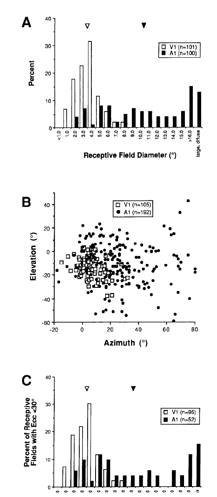
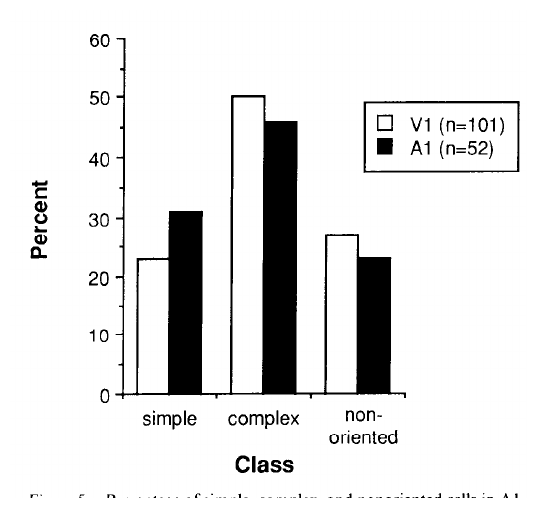
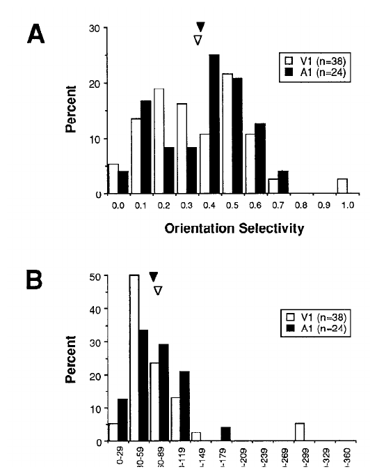
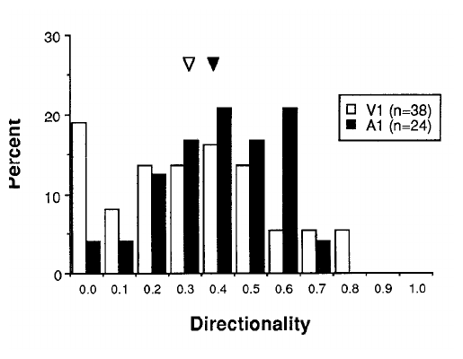
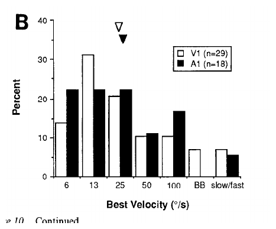

They made the eye talk to the hearing part of the brain
This paper asks a wild but clean question: if a young brain area normally built for sound starts receiving messages from the eye instead, what happens?
The researchers worked with newborn ferrets. They changed the normal route so some eye wires grew into a hearing relay, which already talks to the hearing cortex. Later, when the ferrets were adults, they checked whether that hearing cortex could respond to visual things.
The hearing cortex did not stay completely deaf to vision
The big result is simple: the auditory cortex of these rewired ferrets really did respond to visual stimulation. The authors recorded from single brain cells and found many cells in the hearing cortex that fired when the animal saw light bars or visual patterns.
That already matters. It means the cortex is not as locked into one sense as a schoolbook diagram might make it look. A brain area can accept a very different input if that input arrives early enough in development.
But it saw like a fuzzy, slow camera
The rewired auditory cortex was not magically identical to normal visual cortex. Its visual responses were weaker. Its "patch of the world" per cell was much larger. Its signals also arrived more slowly.
So the hearing cortex learned to look, but it did not get the crisp high-resolution input that normal visual cortex gets. The incoming eye fibers were probably a slower, blurrier class of retinal signal.
The shocker: it still built visual-style filters
Here is the surprising part. Even with the weird route and fuzzy input, cells in the auditory cortex behaved in ways that looked a lot like visual cortex cells.
Some cells cared about the angle of a moving bar. Some cared about movement direction. Some preferred different speeds. The paper also found familiar visual-cell types: simple cells, complex cells, and cells that did not care much about angle.
What this means
The paper does not prove that every cortex area is identical. The auditory cortex still carried fingerprints of the weird input route: weaker response, bigger visual patches, slower timing.
But it does show that sensory cortex is more flexible than a fixed map. Some useful cortical circuits may be shared across senses, or early inputs may help shape a cortex area into the job it gets assigned.
The Question
Is sensory cortex pre-labeled, or can input change what it becomes?
Roe and colleagues used a strong developmental perturbation: in newborn ferrets, they removed normal retinal targets and denervated the auditory thalamus so retinal ganglion cells could innervate the medial geniculate nucleus, the thalamic relay that normally feeds primary auditory cortex.
The adult experiment then asked what the rerouted pathway produced in cortex. Did primary auditory cortex simply receive weak visual drive, or did it construct higher-order visual response properties that normally define primary visual cortex?
Key Concepts
The vocabulary you need before the data
Click any concept to expand it. These are the load-bearing terms for the rest of the paper.
Primary auditory cortex
The cortex area that normally receives sound information.
Medial geniculate nucleus
The auditory thalamic relay that became the new target for retinal fibers.
Receptive field
The patch of visual space where a stimulus changes a cell's firing.
Orientation tuning
A cell's preference for a bar or edge at a particular angle.
W-cell input
A slower, blurrier class of retinal signal.
Interactive Widget
The rerouting experiment, shown as a circuit
Switch between the normal visual path and the rewired path. The surface layer is the visible sensory object; the data layer is the neural route carrying the signal.
visual relay
auditory relay
visual cortex
auditory cortex
Surface layer
A visual stimulus is shown to the animal: spots, bars, moving edges, and sweeping bars on a screen.
Data layer
Retinal ganglion cells drive the medial geniculate nucleus. That relay sends activity to A1, where single units are recorded.
What changes
The target cortex is auditory, but the input has become visual. The paper measures whether A1 forms visual receptive-field properties.
Data: normal retinal targets removed or reduced.
Data: retinal fibers can innervate MGN.
Data: single-unit spikes from A1 or V1.
Data: size, location, latency, ocular dominance.
Data: orientation, direction, velocity indices.
Method
What they recorded
They stimulated the optic chiasm electrically, presented visual stimuli on a tangent screen, mapped receptive fields with a hand-held projection lamp, and then quantitatively tested subsets with moving bars at different orientations, directions, and velocities.
Results
The differences: A1 saw, but with a rougher input stream
This board maps the paper's main "not like V1" findings. Use the slider to change the drawn A1 receptive-field diameter and see why the authors describe A1 fields as much larger.

Figure 2 evidence: A1 receptive fields are larger and more peripheral than V1 fields; the eccentricity-matched comparison still shows A1 fields are larger.Receptive-field size simulator: what this means in practice
3.9
10.9
Visible input: the experimenter moves a bar or spot on the screen. A cell only cares about the part of the screen inside its circle.
Hidden cell view: V1 averages a small 3.9 deg patch; rewired A1 averages a much wider 10.9 deg patch.
7.8× V1
Practical output: the A1 cell can say “something happened in this broad zone,” but its location signal is coarser than V1.
Results
The similarities: A1 built visual-like receptive-field machinery
The paper's conceptual punch is here. The input stream was rougher, but the cortical transformations were unexpectedly similar to normal visual cortex.

Figure 5: simple, complex, and nonoriented cells appeared in roughly similar proportions in rewired A1 and normal V1.
Figure 8: orientation selectivity means were nearly the same: A1 0.41, V1 0.39; orientation width distributions were also not different.
Figure 9: directionality distributions were not significantly different. A1 mean was 0.45; V1 mean was 0.36.
Figure 10B: velocity tuning distributions were similar. A1 mean was 27.9 deg/sec; V1 mean was 24.6 deg/sec.How to read the tuning claim
Interpretation
Two explanations survive the paper
The authors are careful. Their data show cross-modal visual processing in auditory cortex, but they do not fully decide whether visual input instructed A1 to form visual circuits or whether A1 already shared common cortical processing motifs with V1.
| Hypothesis | What it says | Why it fits |
|---|---|---|
| Input instructs cortex | Early visual activity shapes immature A1 into building visual-like intracortical circuits. | The surgery happens while cortex is still developing, when afferent input can strongly regulate circuit formation. |
| Cortices share common tools | A1 and V1 already have similar circuit motifs; visual input activates them in a visual context. | Auditory and visual cortices share laminar structure, local connectivity motifs, and tuning shaped by inhibition. |
Implications
What this changes for a reader
For developmental neuroscience
Cortical fate is not just a label stamped on each region. Early input can reveal flexibility in how sensory cortex builds computations.
For sensory substitution
The study supports the idea that cortex can learn unusual input mappings, especially when those mappings arrive early and through stable pathways.
For interpreting plasticity
Plasticity is constrained. The rewired cortex saw in a lower-quality way because the input class and thalamocortical wiring still mattered.
For theory
The result pushes against "one cortex, one sense" and toward reusable cortical algorithms shaped by incoming data.
Limits
What the paper does not settle
Not a normal visual system
The animals had major neonatal lesions. This is a powerful causal model, not a small natural variation.
Small quantified A1 subset
Only 24 A1 cells were quantitatively characterized for orientation because many A1 responses were weak.
No laminar analysis
The authors explicitly say they did not conduct a layer-by-layer cortical analysis.
Mechanism unresolved
The data do not distinguish fully between input-instructed visual circuitry and common circuits already present across sensory cortices.
Quiz
Check your model
1. What was rerouted in the experiment?
2. Which result best captures the "different from V1" side?
3. Why are orientation and direction tuning important here?
comment/feedback
Leave review notes on the local page
Use the feedback panel to highlight text, select visual blocks, attach comments, and submit a batch. Submitted comments are saved locally so Codex can process them and update this explainer.
Open the panel
Use the floating feedback launcher, or the button below, to bring up the review tools.
Attach a note
Highlight confusing prose or select a figure/widget, then describe what should change.
Submit batch
The local server appends feedback to roe-1992-rewired-ferrets/feedback/inbox.jsonl.
papers/roe-1992-rewired-ferrets/feedback/inbox.jsonl